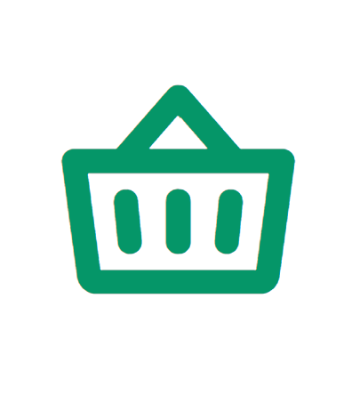
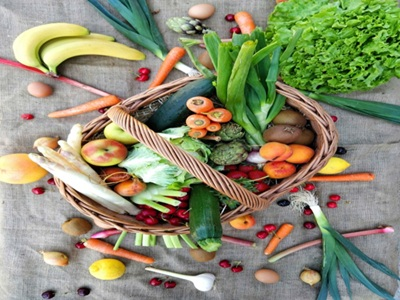

Ready to simplify your grocery shopping?
Create a free FreshBasket Market account, save your usual items and delivery addresses, and complete your next weekly shop in under ten minutes.

same-day grocery in your neighborhood
FreshBasket Market connects you to trusted local markets and supermarkets so you can stock up on fresh produce, pantry staples and household essentials without leaving home.

How FreshBasket Market works
From browsing to delivery, we make weekly shopping simple and predictable.
Enter your address to see nearby supermarkets and open-air markets. Filter by price, distance, or speciality products.
Add fresh produce, grains, meat, snacks and household items. See live totals, delivery windows and substitution options.
Our shoppers pick and pack your order carefully. Follow your rider on the map and receive updates until it reaches your door.
Everything you need in one place
Shop across aisles just like in a physical supermarket, without waiting in line.
Crisp lettuce, ripe tomatoes, seasonal fruits, herbs and more sourced daily from partner farms and markets.
Stock up on rice, pasta, beans, flour, spices, tinned foods and everyday cooking essentials from trusted brands.
From milk, yoghurt and cheese to poultry, seafood and frozen vegetables, keep your fridge and freezer fully stocked.
Create a free FreshBasket Market account, save your usual items and delivery addresses, and complete your next weekly shop in under ten minutes.